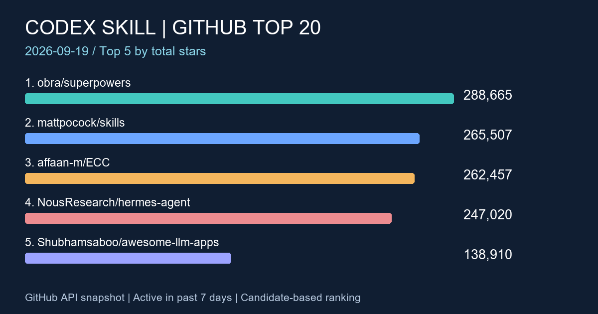

2026-09-19 · GitHub · Codex Skill
GitHub Codex Skill 熱門專案 TOP20
2026-09-19 週報：以 Anysearch 發現候選、GitHub 官方資料驗證，依累積 Stars 整理近七天更新的技能與 Codex 代理專案。

前言
本週從工程技能集合、代理工具與工作流程找出研究入口。累積 Stars 表示關注度，不等於品質、企業相容性或本週新增 Stars。
搜尋條件
- 整理日期：2026-09-19（Asia/Taipei）；七天 Push 窗口：2026-09-12T11:03:06.395402+00:00 至 2026-09-19T11:03:06.395402+00:00（UTC）。擷取完成：2026-09-19T11:03:12.851038+00:00。
- 使用 Anysearch week 搜尋 GitHub Repository，涵蓋 Codex Skill、Codex Skills、OpenAI Codex Skill、Agent Skill、Codex agents、Codex plugin、Codex automation。code 分類查詢連線失敗，採一般搜尋；結果仍有舊文章與非 repository，故搜尋片段不作為日期或排名依據。
- 補充前期榜單與 GitHub 官方搜尋：agent skills、codex skill、codex plugin、codex agents、codex automation，加入 pushed:>=2026-09-12，每組按 Stars 取前 50，再以完整 pushed_at 篩選。
- description 明列 Codex、代理技能，或 topics 明列 codex／agent-skills 者列入；openai/codex 為核心代理專案。廣義 Agent Skills 與 Codex 周邊工具均在範圍內，關聯不明的通用平台不列入。封存專案排除。
- Stars、Forks、主要語言、pushed_at、原始 description 均取 GitHub 官方 API。繁體中文僅為文章語言，沒有當作 repository 語言限制。空語言顯示未標示，空描述顯示未提供描述。
- 驗證 208 個專案，符合相關性與日期條件 193 個，按累積 Stars 降冪取 20 個。這是本次搜尋候選集合的 TOP20，並非全 GitHub 完整排名。Push 日期顯示 UTC。
TOP20 排名表
手機可左右捲動。原始描述的效果、數量與排名宣稱為作者自述，本站未獨立實測。
| 排名 | 專案 | Stars | Forks | 語言 | 最近 Push | 原始描述 | 功能簡介 |
|---|---|---|---|---|---|---|---|
| 1 | obra/superpowers GitHub API | 288,665 | 25,819 | Shell | An agentic skills framework & software development methodology that works. | 將可組合技能與軟體開發方法整合成框架。 | |
| 2 | mattpocock/skills GitHub API | 265,507 | 22,388 | Shell | Skills for Real Engineers. Straight from my .agents directory. | 工程師使用的代理技能集合，原始描述指出來源為作者的 .agents 目錄。 | |
| 3 | affaan-m/ECC GitHub API | 262,457 | 39,261 | JavaScript | The agent harness performance optimization system. Skills, instincts, memory, security, and research-first development for Claude Code, Codex, Opencode, Cursor and beyond. | 整合技能、記憶、安全與研究流程的代理工作環境。 | |
| 4 | NousResearch/hermes-agent GitHub API | 247,020 | 51,850 | Python | The agent that grows with you | 可持續成長的 AI 代理；GitHub topics 列有 Codex，屬代理工具類，非 Codex 專屬技能包。 | |
| 5 | Shubhamsaboo/awesome-llm-apps GitHub API | 138,910 | 20,430 | Python | 100+ AI Agents, Agent Skills and RAG Apps - Free and Open Source. | 收錄 AI 代理、Agent Skills 與 RAG 應用範例。 | |
| 6 | farion1231/cc-switch GitHub API | 133,631 | 9,216 | Rust | A cross-platform desktop All-in-One assistant for Claude Code, Codex, OpenCode, OpenClaw, Grok Build & Hermes Agent. Only official website: ccswitch.io | 跨平台程式代理桌面助手；topics 列有技能管理與 Codex。 | |
| 7 | nextlevelbuilder/ui-ux-pro-max-skill GitHub API | 128,940 | 13,747 | Python | An AI skill that provides design intelligence for building professional UI/UX across multiple platforms. | 提供跨平台 UI/UX 設計技能；topics 包含 Codex。 | |
| 8 | openai/codex GitHub API | 125,240 | 19,428 | Rust | Lightweight coding agent that runs in your terminal | 在終端執行的程式代理，為 OpenAI 的 Codex 儲存庫。 | |
| 9 | Graphify-Labs/graphify GitHub API | 119,497 | 11,553 | Python | Turn any codebase, with its docs, SQL schemas, configs, and PDFs, into a queryable knowledge graph. A /graphify skill for Claude Code, Cursor, Codex, and Gemini CLI: local deterministic AST parsing, every edge explained, no vector store. | 將程式碼與文件轉成可查詢知識圖譜的技能。 | |
| 10 | JuliusBrussee/caveman GitHub API | 106,676 | 6,179 | Go | 🪨 why use many token when few token do trick. Viral skill + proxy for coding agents that cuts 65% of tokens by talking like a caveman. | 透過精簡語句降低輸出用量的技能；節省比例為作者宣稱，未獨立實測。 | |
| 11 | nexu-io/open-design GitHub API | 97,005 | 11,273 | TypeScript | 🎨 Best DeepSeek Harness Design Plugin. The open-source Claude Design alternative. 🖥️ Local-first desktop app. 🖼️ Your coding agent becomes the design engine: prototypes, landing pages, dashboards, slides, images & video — real files, HTML/PDF/PPTX/MP4 export. 🤖 Claude Code / Codex / Cursor / DeepSeek Harness / OpenCode & 20+ CLIs via BYOK. | 讓程式代理產出設計與多媒體檔案的本機應用，描述列有 Codex。 | |
| 12 | addyosmani/agent-skills GitHub API | 96,647 | 10,209 | JavaScript | Production-grade engineering skills for AI coding agents. | 面向正式工程開發的代理技能集合。 | |
| 13 | thedotmack/claude-mem GitHub API | 94,232 | 8,317 | TypeScript | Persistent Context Across Sessions for Every Agent – Captures everything your agent does during sessions, compresses it with AI, and injects relevant context back into future sessions. Works with Claude Code, OpenClaw, Codex, Gemini, Hermes, Copilot, OpenCode + More | 將代理工作摘要保留到後續工作階段的記憶工具，描述列有 Codex。 | |
| 14 | Leonxlnx/taste-skill GitHub API | 88,351 | 6,017 | JavaScript | Taste-Skill - gives your AI good taste. stops the AI from generating boring, generic slop | 偏前端與設計輸出品質控制的 skill，用來降低 AI 生成介面的模板味。 | |
| 15 | bytedance/deer-flow GitHub API | 82,679 | 11,418 | Python | An open-source long-horizon SuperAgent harness that researches, codes, and creates. With the help of sandboxes, memories, tools, skill, subagents and message gateway, it handles different levels of tasks that could take minutes to hours. | 結合沙箱、記憶、工具與技能的長任務代理框架。 | |
| 16 | ComposioHQ/awesome-claude-skills GitHub API | 75,307 | 8,724 | Python | A curated list of awesome Claude Skills, resources, and tools for customizing Claude AI workflows | 整理 Claude 技能、資源與工作流程工具，GitHub topics 同時列有 Codex 與 Agent Skills。 | |
| 17 | ruvnet/ruflo GitHub API | 72,821 | 8,636 | TypeScript | 🌊 The original agent harness. Deploy intelligent multi-player swarms, coordinate autonomous workflows, and build conversational AI systems. Features adaptive memory, self-learning intelligence, federation, vector RAG integration, and native Claude Code / Codex / Hermes and many more Integrated | 結合多代理工作流程與記憶的框架，原始描述列有 Codex 整合。 | |
| 18 | stablyai/orca GitHub API | 72,236 | 4,726 | TypeScript | Orca is the ADE for working with a fleet of parallel agents. Run any coding agent with your own subscription. Available on desktop, mobile and remote runtime. | 管理多個平行程式代理的開發環境；topics 列有 Codex。 | |
| 19 | career-ops-hq/career-ops GitHub API | 72,111 | 13,588 | JavaScript | Open-source AI job search: scan job portals, evaluate listings into a structured A-H report with a global 1-5 score, tailor your CV, track applications — runs locally in your AI coding CLI (Claude Code, Codex, OpenCode, Antigravity…) | 在 Codex 等程式 CLI 執行求職搜尋、履歷調整與申請追蹤流程。 | |
| 20 | colbymchenry/codegraph GitHub API | 71,449 | 4,597 | C | Pre-indexed code knowledge graph, auto syncs on code changes, for Claude Code, Codex, Gemini, Cursor, OpenCode, AntiGravity, Kiro, CoPilot, and Hermes Agent — fewer tokens, fewer tool calls, 100% local | 替 Codex 等代理提供程式知識圖譜與變更同步。 |
觀察重點
- 本次前三名為 obra/superpowers、mattpocock/skills、affaan-m/ECC，工程方法與技能集合仍佔據榜單前段。
- 技能包與代理周邊工具混合入榜，評估時應分開看用途：工程流程、設計產出、記憶保存、設定管理各有不同需求。
- 七天窗口會改變名單；近期沒有 Push 的高 Stars 專案也會被排除，不能以落榜判斷停止維護。
MIS／技術人員注意項目
- 先在測試專案評估技能輸入、產出與人工修正時間；檢視 SKILL.md、附帶腳本、授權及版本更新方式。
- OA 與 PROD 分別確認外部 API、離線依賴、服務帳號及執行權限；跨平台宣稱不能代替 Windows／PowerShell 實測。
- 記憶與索引工具先確認保存位置、保留期限及資料傳送範圍，以去識別化內容測試。
- 固定已驗證版本再導入；高 Stars 不保證供應鏈安全或符合內部管理要求。
本週變化簡述
比較已發佈的 2026-09-12 週報快照，前五名中共同入榜項目的 Stars 差值：
- obra/superpowers：285,574 → 288,665（+3,091 Stars）。
- affaan-m/ECC：256,771 → 262,457（+5,686 Stars）。
- NousResearch/hermes-agent：244,758 → 247,020（+2,262 Stars）。
- Shubhamsaboo/awesome-llm-apps：137,328 → 138,910（+1,582 Stars）。
本次新增入榜：mattpocock/skills、Leonxlnx/taste-skill、ComposioHQ/awesome-claude-skills。本次未續留：anthropics/skills、mvanhorn/last30days-skill、tt-a1i/archify。新增入榜不代表本週新成立；名次也受搜尋涵蓋與七天窗口影響。差值僅為兩次快照之差。
例如 anthropics/skills 的 GitHub pushed_at 為 2026-09-10T19:44:11Z，早於本週窗口，故不列入；mattpocock/skills 本次 pushed_at 為 2026-09-18T10:12:48Z，重新符合日期條件。
結語
從一項可量測的工程工作開始，搭配權限、依賴與維護成本評估，再決定是否導入。榜單提供研究入口，實際採用仍以測試結果為準。
資料來源與時間提醒
來源為 Anysearch 搜尋與各列 GitHub Repository／官方 API。完整時間、官方欄位及搜尋狀態保留於 本次資料快照。
Stars、Forks 與最近 Push 時間會隨 GitHub 即時變動，此頁保留本次整理結果。